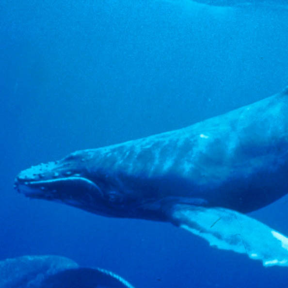
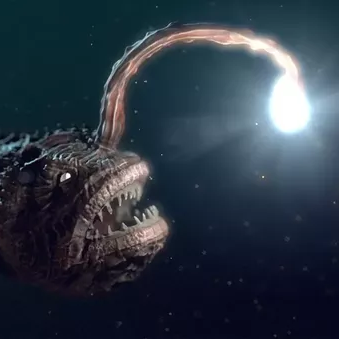
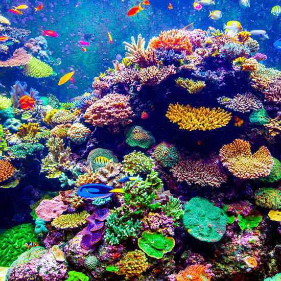
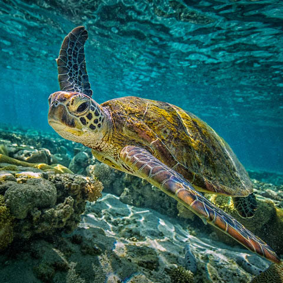
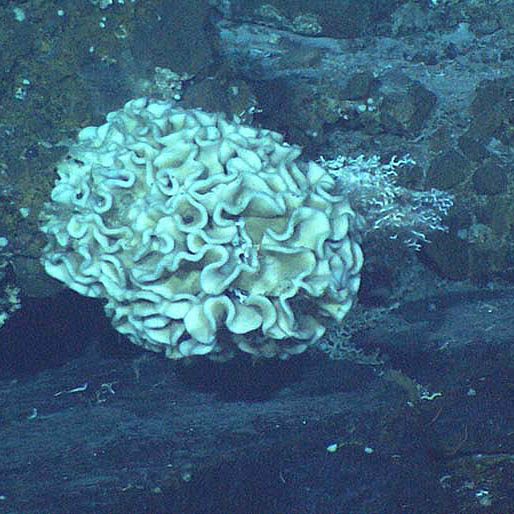

Marianas Trench Marine National Monument
Wildlife & Habitat
There are many species of whales and dolphins found in the Islands Unit of the Monument. Some of these species are year-round residents of the Mariana archipelago, while others are seasonal visitors or merely transit through the area.
The researchers spotted the life forms at depths up to 6.6 miles within the Sirena Deep of the Mariana Trench National Wildlife Refuge. Recent studies indicate that by trapping particles from the water, xenophyophores can concentrate high levels of lead, uranium and mercury and are thus likely highly resistant to large doses of heavy metals. They are well suited to a life of darkness, low temperature and high pressure in the deep sea.
| SPECIES | CATEGORY | ENDAGERED RATING (1-10) |
|---|---|---|
| Marine Mammals

|
Three local whale species are protected under the Endangered Species Act: the sperm whale, the humpback whale, and the sei whale. Other cetaceans include: short-finned pilot whales, pygmy killer whales, Bryde’s whales, Cuvier’s beaked whales, melon-headed whales, pygmy sperm whales, dwarf sperm whales, spinner dolphins (Stenella longirostris), bottlenose dolphins, pantropical spotted dolphins, striped dolphins, Risso’s dolphins, and rough-toothed dolphins. All of the marine mammals are protected under the Marine Mammal Protection Act. | This averaged between 3 and 8 depending upon the climate. |
| Fish  | A wide variety of fish live in the waters of the Islands Unit. Pelagic fishes include blue marlin, sharks, mahimahi, spearfish, sailfish, and wahoo. The waters of Farallon de Pajaros (also known as Uracas), Maug, and Asuncion support some of the largest biomass of reef fishes in the Mariana Archipelago. | This averaged between 4 and 6 depending upon the climate.° |
| Corals  | Farallon de Pajaros, Maug, and Asuncion are ringed by coral ecosystems that contain one of the most diverse collections of stony corals in the Western Pacific including more than 300 species, higher than any other U.S. reef area. | This averaged between 1 and 5 depending upon the climate. |
| Sea Turtles | The remoteness of the Islands Unit helps preserve the habitat for rare sea turtles. Green sea turtles are listed as threatened and hawksbill turtles are listed as endangered under the Endangered Species Act. They are both recognized as a threatened/endangered species by the CNMI Government. | This averaged between 2 and 7 depending upon the climate. |
| Xenophyophores  | During a July 2011 voyage to the Mariana Trench, Scripps Institution of Oceanography researchers and National Geographic engineers documented the deepest known existence of xenophyophores, single-celled animals exclusively found in deep-sea environments. Also known as "giant amoebas", these xenophyophores often exceed 4 inches in diameter. | This averaged between 8 and 10 depending upon the climate. |